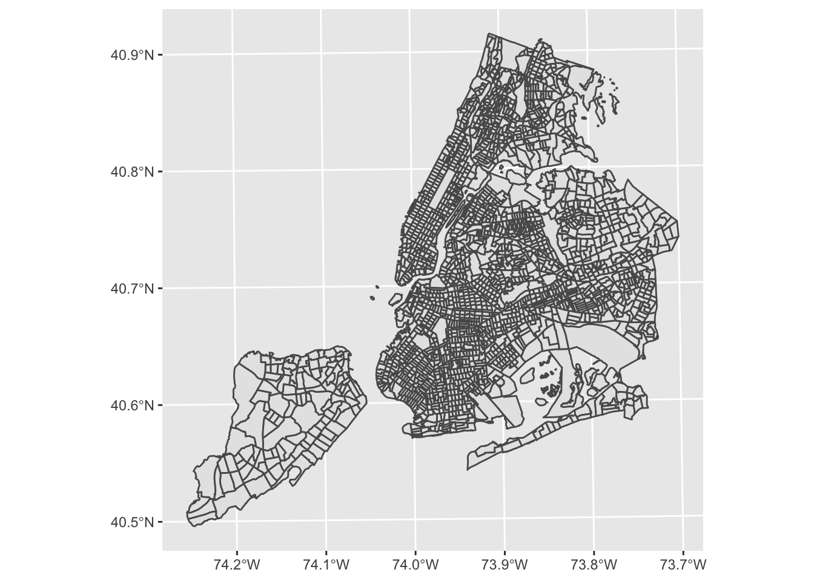
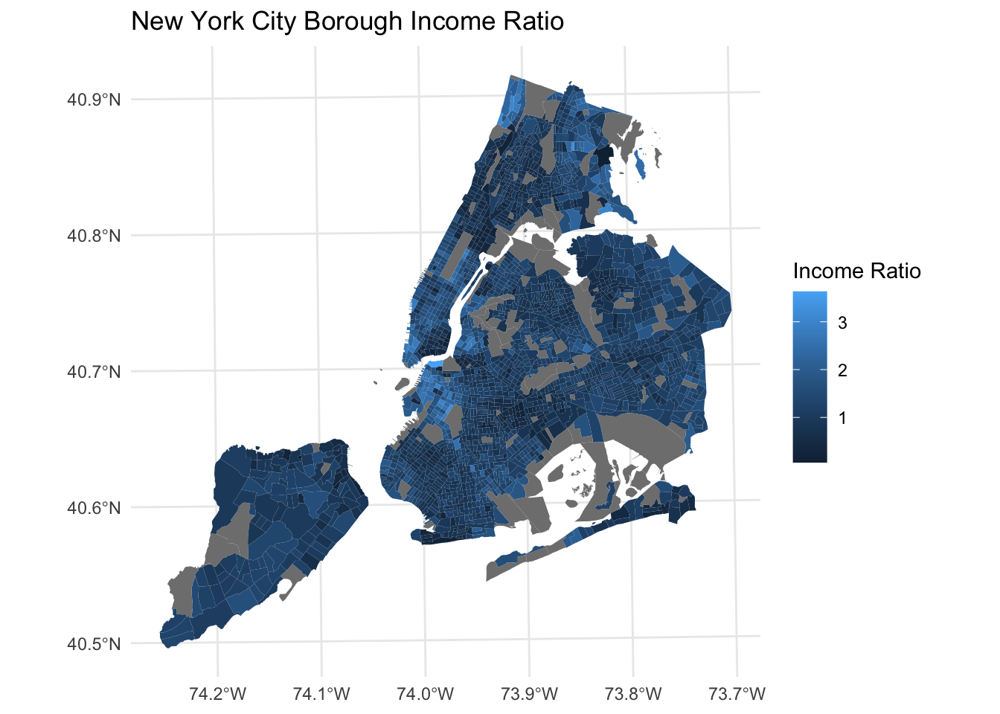
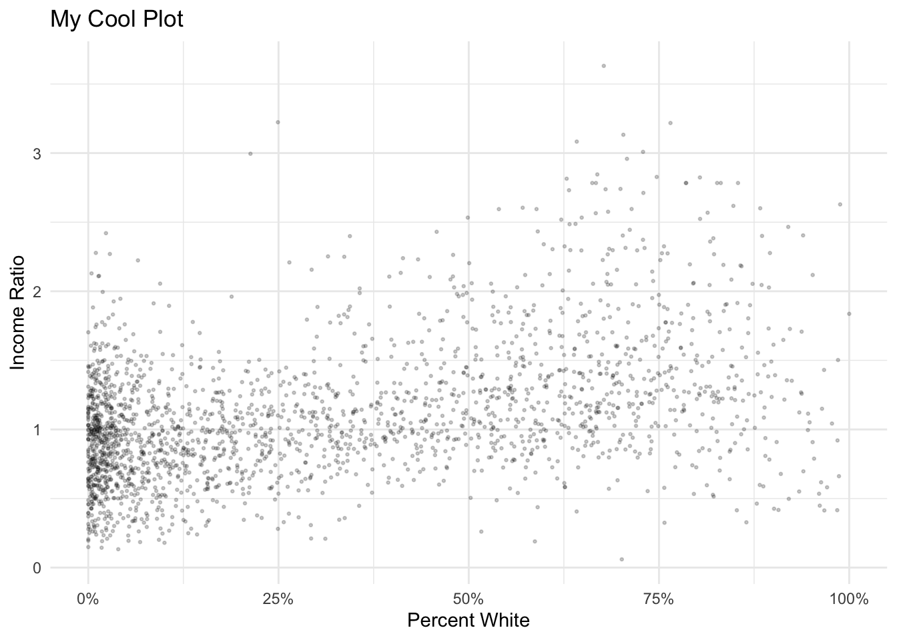
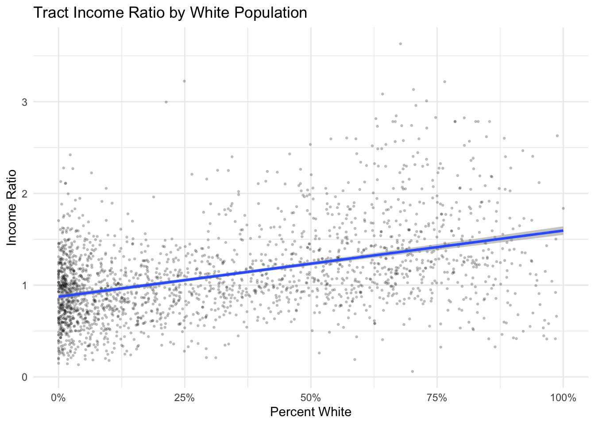

Code
library(gt)
library(tigris)
library(tidycensus)
library(tidyverse)
library(sf)In this lab, we’ll explore some of the common measures of residential segregation and apply them at the city and regional levels.
In our last lab, we got a basic idea of the racial distribution for census tracts. Now we can start to think about summary measures of the extent to which these groups are segregated within the region. We will use census tracts as a unit of analysis to help us describe county-level racial segregation.
Most measures of residential segregation are set up to summarize the level of heterogeneity (or homogeneity) observed between neighborhoods to a city or regional scale to produce a summary measure that then tells us how even populations are distributed at the neighborhood level.
There are also some measures that focus more on segregation at a neighborhood level. In this lab, we’ll focus on those measures that summarize characteristics to more aggregate levels such as cities or regions.
Let’s get going…
Follow this link to accept the lab Github Classroom assignment repository.
Let’s start as usual by loading the packages that we’ll need for our work.
library(gt)
library(tigris)
library(tidycensus)
library(tidyverse)
library(sf)For the purposes of our example, we’ll continue examining racial segregation in New York City - an extension of our previous lab example. Let’s start by downloading and preparing data on race for New York City.
Let’s download 2020 census tract boundaries for New York City’s five Boroughs. While we’re at it, we’ll clean them up a little bit as we did in our last lab.
| FIPS Code | County Name | Borough Name |
|---|---|---|
| 36047 | Kings County | Brooklyn |
| 36005 | Bronx County | Bronx |
| 36081 | Queens County | Queens |
| 36085 | Richmond County | Staten Island |
| 36061 | New York County | Manhattan |
nyc_trt <- tracts(state = "NY", county = c("005", "047", "061", "081", "085"), year = 2020) |>
st_transform(26918) |>
filter(ALAND != 0) |>
erase_water(area_threshold = .9, year = 2020)
|
| | 0%
|
| | 1%
|
|= | 1%
|
|= | 2%
|
|== | 2%
|
|== | 3%
|
|=== | 4%
|
|=== | 5%
|
|==== | 5%
|
|==== | 6%
|
|===== | 7%
|
|===== | 8%
|
|====== | 8%
|
|====== | 9%
|
|======= | 10%
|
|======== | 11%
|
|======== | 12%
|
|========= | 12%
|
|========= | 13%
|
|=========== | 16%
|
|============ | 16%
|
|============ | 18%
|
|============= | 19%
|
|================= | 24%
|
|==================== | 29%
|
|======================= | 33%
|
|======================== | 34%
|
|======================== | 35%
|
|========================= | 35%
|
|========================= | 36%
|
|========================== | 37%
|
|=========================== | 39%
|
|============================ | 40%
|
|============================= | 41%
|
|============================= | 42%
|
|============================== | 42%
|
|============================== | 43%
|
|=============================== | 44%
|
|=============================== | 45%
|
|================================ | 45%
|
|================================== | 48%
|
|================================== | 49%
|
|=================================== | 50%
|
|==================================== | 51%
|
|==================================== | 52%
|
|====================================== | 54%
|
|====================================== | 55%
|
|======================================= | 56%
|
|======================================== | 56%
|
|======================================== | 57%
|
|======================================== | 58%
|
|========================================= | 58%
|
|========================================= | 59%
|
|========================================== | 60%
|
|========================================== | 61%
|
|=========================================== | 61%
|
|=========================================== | 62%
|
|============================================ | 62%
|
|============================================ | 63%
|
|============================================= | 64%
|
|============================================= | 65%
|
|============================================== | 66%
|
|=============================================== | 67%
|
|=============================================== | 68%
|
|================================================ | 68%
|
|================================================ | 69%
|
|================================================= | 70%
|
|================================================= | 71%
|
|================================================== | 71%
|
|================================================== | 72%
|
|=================================================== | 73%
|
|==================================================== | 74%
|
|==================================================== | 75%
|
|===================================================== | 75%
|
|===================================================== | 76%
|
|====================================================== | 77%
|
|====================================================== | 78%
|
|======================================================== | 80%
|
|========================================================= | 81%
|
|========================================================= | 82%
|
|========================================================== | 83%
|
|=========================================================== | 84%
|
|=========================================================== | 85%
|
|============================================================ | 86%
|
|============================================================= | 86%
|
|============================================================= | 87%
|
|============================================================= | 88%
|
|============================================================== | 88%
|
|============================================================== | 89%
|
|=============================================================== | 90%
|
|=============================================================== | 91%
|
|================================================================ | 91%
|
|================================================================ | 92%
|
|================================================================= | 92%
|
|================================================================= | 93%
|
|================================================================== | 94%
|
|================================================================== | 95%
|
|=================================================================== | 95%
|
|=================================================================== | 96%
|
|==================================================================== | 97%
|
|==================================================================== | 98%
|
|===================================================================== | 99%
|
|======================================================================| 100%As a reminder, the code above is accomplishing the following things:
Let’s use ggplot() to visualize so that we can confirm what we’ve downloaded is indeed New York City’s boroughs:
ggplot()+
geom_sf(data=nyc_trt)
Next, we’ll download ACS data on race for New York City. We’ll focus on 2020 data from the 5-year ACS from Table B03002.
To keep things organized, let’s define the variables we want to download. Note that we’re defining variable names as well as values. To facilitate some of our later operations, let’s download these data in wide format rather than tidy format. In wide format, we’ll have one observation (row) for each census tract, with multiple columns containing estimates for each population subgroup and the total population.
dl_vars <- c(
White = "B03002_003",
Black = "B03002_004",
Native = "B03002_005",
Asian = "B03002_006",
HIPI = "B03002_007",
Hispanic = "B03002_012",
Poptot = "B03002_001"
)
# Our tidycensus download call:
nyc_race <- get_acs(
geography = "tract",
state = "NY",
county = c("Bronx", "Kings", "New York", "Queens", "Richmond"),
variables = dl_vars,
year = 2020,
output = "wide"
)
nyc_race |>
slice_head(n = 5) |>
gt()| GEOID | NAME | WhiteE | WhiteM | BlackE | BlackM | NativeE | NativeM | AsianE | AsianM | HIPIE | HIPIM | HispanicE | HispanicM | PoptotE | PoptotM |
|---|---|---|---|---|---|---|---|---|---|---|---|---|---|---|---|
| 36047009202 | Census Tract 92.02, Kings County, New York | 328 | 96 | 162 | 129 | 0 | 12 | 1037 | 293 | 0 | 12 | 1904 | 630 | 3453 | 653 |
| 36047009401 | Census Tract 94.01, Kings County, New York | 132 | 72 | 173 | 245 | 0 | 12 | 1582 | 389 | 0 | 12 | 406 | 283 | 2293 | 380 |
| 36047009402 | Census Tract 94.02, Kings County, New York | 377 | 198 | 38 | 57 | 0 | 12 | 1903 | 586 | 0 | 12 | 271 | 213 | 2746 | 553 |
| 36047009600 | Census Tract 96, Kings County, New York | 1035 | 313 | 78 | 60 | 0 | 17 | 1993 | 519 | 0 | 17 | 2629 | 629 | 5858 | 710 |
| 36047009800 | Census Tract 98, Kings County, New York | 218 | 83 | 162 | 160 | 0 | 17 | 2306 | 504 | 0 | 17 | 3275 | 740 | 6021 | 798 |
Note that tidycensus downloads the data, and labels each column with the label we have defined (with E and M denoting estimates and margins of error).
While we’re at it, let’s separate our tract name label into separate tract, county, and state values.
nyc_race <- nyc_race |>
separate(NAME, into = c("Tract", "County", "State"), sep = ", ")Note the use of sep = ", " includes the space after the comma so we don’t have an extra space in our resulting county and state variables.
Before we further manipulate our data, let’s aggregate the data we have to form county population summaries. Because our tract data is hierarchical, we can sum up our population estimates from tracts to counties to produce county population totals. While we’re at it, we’ll also use the county FIPS codes to create a Borough identifier (we could also add county labels back as well).
nyc_race_co <-
nyc_race |>
group_by(STCO = substr(GEOID, 0, 5)) |>
summarise(
co_WhiteE = sum(WhiteE, na.rm = TRUE),
co_WhiteM = moe_sum(WhiteM, WhiteE),
co_BlackE = sum(BlackE, na.rm = TRUE),
co_BlackM = moe_sum(BlackM, BlackE),
co_NativeE = sum(NativeE, na.rm = TRUE),
co_NativeM = moe_sum(NativeM, NativeE),
co_AsianE = sum(AsianE, na.rm = TRUE),
co_AsianM = moe_sum(AsianM, AsianE),
co_HIPIE = sum(HIPIE, na.rm = TRUE),
co_HIPIM = moe_sum(HIPIM, HIPIE),
co_HispanicE = sum(HispanicE, na.rm = TRUE),
co_HispanicM = moe_sum(HispanicM, HispanicE),
co_PoptotE = sum(PoptotE, na.rm = TRUE),
co_PoptotM = moe_sum(PoptotM, PoptotE),
) |>
mutate(Borough =
case_when(
STCO == "36005" ~ "Bronx",
STCO == "36047" ~ "Brooklyn",
STCO == "36061" ~ "Manhattan",
STCO == "36081" ~ "Queens",
STCO == "36085" ~ "Staten Island")
)Let’s walk through this:
group_by() to aggregate our tract-level data to counties. In this case, we are pulling out the first five digits from the combined state-county-tract FIPS code (substr(GEOID, 0, 5)) using the substr() command from the stringr package. This allows us to create a combined state and county FIPS code (the state is the first two digits - 36 in the case of New York - and the county is the next three digits).summarise() to create summary values for counties. We use sum() on our population estimates to sum up populations for tracts into county totals. We use moe_sum() from the tidycensus() package to properly aggregate margins of error accounting for the size of the population estimate being aggregated. The census provides documentation on what’s implemented in tidycensus. We denote that these are county estimates by including co_ as a prefix - you’ll see why later.case_when() construct borough labels from our combined state and county FIPS codes.As a result, we have a table containing county populations and margins of error for the boroughs of New York City:
| STCO | co_WhiteE | co_WhiteM | co_BlackE | co_BlackM | co_NativeE | co_NativeM | co_AsianE | co_AsianM | co_HIPIE | co_HIPIM | co_HispanicE | co_HispanicM | co_PoptotE | co_PoptotM | Borough |
|---|---|---|---|---|---|---|---|---|---|---|---|---|---|---|---|
| 36005 | 128,717 | 3,742 | 411,293 | 8,800 | 2,882 | 727 | 53,498 | 3,097 | 374 | 198 | 799,765 | 12,002 | 1,427,056 | 14,216 | Bronx |
| 36047 | 938,573 | 10,493 | 754,576 | 10,307 | 3,053 | 638 | 304,420 | 6,367 | 1,009 | 480 | 486,272 | 9,181 | 2,576,771 | 17,237 | Brooklyn |
| 36061 | 763,202 | 11,503 | 199,377 | 6,238 | 1,960 | 581 | 196,097 | 6,049 | 430 | 237 | 418,442 | 9,769 | 1,629,153 | 16,500 | Manhattan |
| 36081 | 559,778 | 8,090 | 385,868 | 7,374 | 5,561 | 948 | 584,214 | 9,369 | 832 | 271 | 631,657 | 10,976 | 2,270,976 | 16,687 | Queens |
| 36085 | 286,462 | 6,247 | 43,941 | 2,970 | 515 | 243 | 47,194 | 2,905 | 55 | 127 | 87,733 | 4,193 | 475,596 | 7,858 | Staten Island |
Let’s create a more polished table showing the population by race for each NYC Borough:
nyc_race_co |>
mutate(other = co_NativeE+co_HIPIE) |>
select(Borough, co_WhiteE, co_BlackE, co_AsianE, co_HispanicE, other, co_PoptotE) |>
gt() |>
fmt_number(2:7, decimals = 0) |>
cols_label(
co_WhiteE = "White",
co_BlackE = "Black",
co_AsianE = "Asian",
co_HispanicE = "Hispanic",
other = "Other",
co_PoptotE = "Total"
) |>
summary_rows(
columns = 2:7,
fns = list(Total = ~sum(.)),
formatter = fmt_number,
decimals = 0)| Borough | White | Black | Asian | Hispanic | Other | Total | |
|---|---|---|---|---|---|---|---|
| Bronx | 128,717 | 411,293 | 53,498 | 799,765 | 3,256 | 1,427,056 | |
| Brooklyn | 938,573 | 754,576 | 304,420 | 486,272 | 4,062 | 2,576,771 | |
| Manhattan | 763,202 | 199,377 | 196,097 | 418,442 | 2,390 | 1,629,153 | |
| Queens | 559,778 | 385,868 | 584,214 | 631,657 | 6,393 | 2,270,976 | |
| Staten Island | 286,462 | 43,941 | 47,194 | 87,733 | 570 | 475,596 | |
| Total | — | 2,676,732 | 1,795,055 | 1,185,423 | 2,423,869 | 16,671 | 8,379,552 |
Note the addition of a summary row at the bottom of the table so we can see the total population by race across New York City. Also note the strategic use of an “Other” category which combines the Native American and Hawaiian Island and Pacific Islander categories.
We now have three resources available to us:
These three pieces of information can form the basis for manipulation and analysis of dimensions of racial segregation in New York City.
Let’s now turn towards the measures of segregation.
Dissimilarity is a common measure of evenness between two populations - dissimilarity measures the distribution of a minority population within a majority population. Conceptually, dissimilarity measures the proportion of that minority or subgroup population that would need to move in order to be equally distributed with the majority population. A dissimilarity score of 0 would mean a completely even distribution of a minority population amongst a majority population (no segregation). A dissimilarity score of 100 would mean a completely segregated minority population (100 percent of the minority population would need to move to achieve an even distribution amongst the population. Dissimilarity is calculated as follows:
\(D = .5*\sum_i |\frac{b_i}{B}-\frac{w_i}{W}|\)
where \(b_i\) is the number of blacks in tract i
\(B\) is the number of blacks for the county
\(w_i\) is the number of whites in tract i
\(W\) is the number of whites for the county
Now that we know the formula, we can start thinking about how to implement this in R with dplyr.
This looks complicated, but we can actually do this fairly simply with dplyr notation. Let’s start off by calculating Black-White dissimilarity.
We have our white and black tract population data already in our il_trt data, and we have our county data in a separate object. Let’s go ahead and join that county data to our tract data.
nyc_race<-left_join(nyc_race |> mutate(STCO = substr(GEOID, 0,5)), nyc_race_co, by= "STCO")Notice that this join looks pretty standard with the exception of nyc_race |> mutate(STCO = substr(GEOID, 0,5)). When we created our county-level summaries of the tract-level data, we created a new variable called STCO which is the combined city and county FIPS codes. In order to join those data to our tract data, we need to temporarily create the same code from our GEOID field in the tract data. The mutate statement temporarily creates the STCO column in the nyc_race data, and the join can be performed denoting the common column, STCO.
Now that we’ve joined these together, we can start breaking down the dissimilarity formula into code-able pieces. Inside the absolute value we are calculating fractions of tract minority and majority populations compared to their county. We then subtract these from each other and use abs() to find the absolute value. After that, we need to sum these all up and multiply by .5. We are calculating these by county, so we can use group_by() to sum up only the data for each county to produce a series of final dissimilarity statistics for each county in New York City. For other regions, you might end up calculating dissimilarity for multiple counties within a region.
nyc_race |>
mutate(dissim_wb = abs(BlackE / co_BlackE - WhiteE / co_WhiteE)) |>
group_by(Borough) |>
summarise(dissimilarity = .5*sum(dissim_wb)) |> gt()| Borough | dissimilarity |
|---|---|
| Bronx | 0.7107378 |
| Brooklyn | 0.7731939 |
| Manhattan | 0.7057447 |
| Queens | 0.8146201 |
| Staten Island | 0.7226401 |
How would you interpret these black-white dissimilarity values? Where is Black-White dissimilarity the highest within the region? Where is it the lowest?
nyc_race |>
mutate(dissim_nww = abs((PoptotE-WhiteE) / (co_PoptotE-co_WhiteE) - WhiteE / co_WhiteE)) |>
group_by(Borough) |>
summarise(dissimilarity = .5*sum(dissim_nww)) |>
gt()| Borough | dissimilarity |
|---|---|
| Bronx | 0.6311840 |
| Brooklyn | 0.5502573 |
| Manhattan | 0.5144714 |
| Queens | 0.5274621 |
| Staten Island | 0.4167665 |
Compare and contrast this with Black-White dissimilarity - what do you observe?
nyc_race |>
mutate(dissim_lw = abs(HispanicE / co_HispanicE - WhiteE / co_WhiteE)) |>
group_by(Borough) |>
summarise(dissimilarity = .5*sum(dissim_lw)) |>
gt()| Borough | dissimilarity |
|---|---|
| Bronx | 0.6244812 |
| Brooklyn | 0.5451200 |
| Manhattan | 0.6129532 |
| Queens | 0.5070836 |
| Staten Island | 0.4122438 |
Compare and contrast this with Black-White dissimilarity - what do you observe?
A second common measure of segregation is interaction which is a measure of exposure. Interaction measures the likelihood of population subgroups interacting with one another based upon their distribution within areal sub units (tracts). For instance, Black-White interaction is calculated as follows:
\(Interaction = \sum_i\frac{b_i}{B}*\frac{w_i}{t_i}\)
Where
\(b_i\) is the Black population of tract i
\(B\) is the Black population of the county
\(w_i\) is the White population of tract i
\(t_i\) is the total population of tract i
Given that there are some similarities to the dissimilarity index, modify your existing code to measure Black White interaction for counties in the New York City:
nyc_race |>
mutate(interaction_bw = ((BlackE / co_BlackE) * (WhiteE / PoptotE))) |>
group_by(Borough) |>
summarise(interaction = sum(interaction_bw, na.rm=TRUE)) |>
gt()| Borough | interaction |
|---|---|
| Bronx | 0.04468322 |
| Brooklyn | 0.13499725 |
| Manhattan | 0.22647975 |
| Queens | 0.07750034 |
| Staten Island | 0.27902540 |
The output here is actually a probability that ranges from 0 to 1. A value closer to 1 indicates a higher probability of there being contact between these two population groups. A value closer to 0 indicates lower probabilities of contact.
Provide your interpretation of Black-White Interaction for New York City boroughs.
nyc_race |>
mutate(interaction_bw = ((PoptotE-WhiteE) / (co_PoptotE-co_WhiteE) * WhiteE / PoptotE)) |>
group_by(Borough) |>
summarise(interaction = sum(interaction_bw, na.rm=TRUE)) |>
gt()| Borough | interaction |
|---|---|
| Bronx | 0.0630752 |
| Brooklyn | 0.2310775 |
| Manhattan | 0.3196593 |
| Queens | 0.1771489 |
| Staten Island | 0.4523662 |
nyc_race |>
mutate(interaction_bw = (HispanicE / co_HispanicE * WhiteE / PoptotE)) |>
group_by(Borough) |>
summarise(interaction = sum(interaction_bw, na.rm=TRUE)) |>
gt()| Borough | interaction |
|---|---|
| Bronx | 0.06632347 |
| Brooklyn | 0.26564666 |
| Manhattan | 0.27182625 |
| Queens | 0.20714070 |
| Staten Island | 0.46687669 |
How would you interpret Black-White, Non-White White, and Latino-White interaction jointly?
The final measure of racial segregation we’ll look at in this lab is isolation which is only measured for one group at a time. Isolation measures the likelihood of contact for a subgroup with other subgroup members. It is interpreted similarly to Interaction (as a probability ranging from 0 to 1):
Isolation for Blacks
\(Isolation = \sum_i\frac{b_i}{B}*\frac{b_i}{t_i}\)
Where
\(b_i\) is the Black population of tract i
\(B\) is the Black population of the county
\(t_i\) is the total population of tract i
Let’s calculate Black Isolation:
nyc_race |>
mutate(isolation_bw = (BlackE / co_BlackE * BlackE / PoptotE)) |>
group_by(Borough) |>
summarise(isolation = sum(isolation_bw, na.rm=TRUE)) |>
gt()| Borough | isolation |
|---|---|
| Bronx | 0.4180943 |
| Brooklyn | 0.6295217 |
| Manhattan | 0.3457500 |
| Queens | 0.5888139 |
| Staten Island | 0.3198306 |
You know what comes next. Let’s calculate Nonwhite Isolation and Latino Isolation and interpret what you see.
nyc_race |>
mutate(isolation_bw = ((PoptotE - WhiteE) / (co_PoptotE - co_WhiteE) * (PoptotE-WhiteE) / PoptotE)) |>
group_by(Borough) |>
summarise(isolation = sum(isolation_bw, na.rm=TRUE)) |>
gt()| Borough | isolation |
|---|---|
| Bronx | 0.9369248 |
| Brooklyn | 0.7689225 |
| Manhattan | 0.6803407 |
| Queens | 0.8228511 |
| Staten Island | 0.5476338 |
nyc_race |>
mutate(isolation_bw = (HispanicE / co_HispanicE * HispanicE / PoptotE)) |>
group_by(Borough) |>
summarise(isolation = sum(isolation_bw, na.rm=TRUE)) |>
gt()| Borough | isolation |
|---|---|
| Bronx | 0.6313472 |
| Brooklyn | 0.3350622 |
| Manhattan | 0.4678842 |
| Queens | 0.4283512 |
| Staten Island | 0.2666154 |
Provide your interpretation of how isolation differs for these groups and for each borough.
While we’re at it, let’s also pay attention to segregation on the basis of income. A simple measure of income inequality and distribution is to calculate the difference in median income between the county and the census tracts that make up the county.
We have all of our census tract geographic data, but need to go back to census data to download tract and county median household income data (this is not a place to take the average or weighted average of the tract-level data). Let’s download and prepare these as a new dataset. Median household income is contained in ACS table B19013:
dl_vars <- c(
MHHI = "B19013_001")
# Our tidycensus download call:
nyc_income <- get_acs(
geography = "tract",
state = "NY",
county = c("Bronx", "Kings", "New York", "Queens", "Richmond"),
variables = dl_vars,
year = 2020,
output = "wide"
)
dl_vars <- c(
co_MHHI = "B19013_001")
nyc_income_co <- get_acs(
geography = "county",
state = "NY",
county = c("Bronx", "Kings", "New York", "Queens", "Richmond"),
variables = dl_vars,
year = 2020,
output = "wide"
)
nyc_income |>
slice_head(n = 5) |>
gt()| GEOID | NAME | MHHIE | MHHIM |
|---|---|---|---|
| 36047009202 | Census Tract 92.02, Kings County, New York | 41563 | 18846 |
| 36047009401 | Census Tract 94.01, Kings County, New York | 51346 | 13554 |
| 36047009402 | Census Tract 94.02, Kings County, New York | 58750 | 10259 |
| 36047009600 | Census Tract 96, Kings County, New York | 62614 | 13004 |
| 36047009800 | Census Tract 98, Kings County, New York | 56229 | 7251 |
Let’s also take a look at our county income table:
nyc_income_co |>
slice_head(n=5) |>
gt()| GEOID | NAME | co_MHHIE | co_MHHIM |
|---|---|---|---|
| 36061 | New York County, New York | 89812 | 1681 |
| 36085 | Richmond County, New York | 85381 | 2396 |
| 36005 | Bronx County, New York | 41895 | 624 |
| 36047 | Kings County, New York | 63973 | 679 |
| 36081 | Queens County, New York | 72028 | 691 |
And now let’s join the two together (again creating our state and county FIPS codes from our combined state, county, and tract FIPS codes):
nyc_income <- left_join(nyc_income |> mutate(STCO = substr(GEOID, 0, 5)), nyc_income_co, by=c("STCO" = "GEOID"))Now we can calculate the ratio of income for our census tract to that of the county:
nyc_income <-nyc_income |>
mutate(inc_ratio = MHHIE / co_MHHIE)Now let’s map out this income ratio statistic for New York City tracts:
nyc_income <- left_join(nyc_income, nyc_trt, by="GEOID") |> st_as_sf()
ggplot()+
geom_sf(data=nyc_income, aes(fill=inc_ratio), colour = NA)+
labs(title = "New York City Borough Income Ratio", fill = "Income Ratio")+
theme_minimal()
What would a ratio of 1 indicate? What would a ratio of 3 indicate? Where do we see big differences?
While we’re at it, it might be interesting to create a scatter plot that illustrates the relationship between racial concentration and income. To do this, we’ll need to join together our two datasets.
nyc_dataset <- left_join(nyc_race, nyc_income |> st_set_geometry(NULL)|> select(GEOID, MHHIE, MHHIM, co_MHHIE, co_MHHIM, inc_ratio), by="GEOID")Let’s plot the Percent White on the X axis and the income ratio on the y axis using geom_point):
ggplot()+
geom_point(data=nyc_dataset, aes(x=(WhiteE/PoptotE), y=inc_ratio), cex = .5, alpha = .2) +
labs(title = "My Cool Plot", x = "Percent White", y = "Income Ratio") +
scale_x_continuous(labels = scales::percent)+
theme_minimal()
How would you describe this relationship?
Now see if you can add a linear line of best fit to these data using geom_smooth (you’ll need to set method = lm to get a fitted linear model):
ggplot()+
geom_point(data=nyc_dataset, aes(x=(WhiteE/PoptotE), y=inc_ratio), cex = .5, alpha = .2) +
geom_smooth(data=nyc_dataset, method = "lm", aes(x=(WhiteE/PoptotE), y=inc_ratio), alpha = .5)+
labs(title = "Tract Income Ratio by White Population", x = "Percent White", y = "Income Ratio") +
scale_x_continuous(labels = scales::percent)+
theme_minimal()
What’s the relationship between the percent white population and the income ratio?
What would it look like to split this out by boroughs using facets?
ggplot()+
geom_point(data=nyc_dataset, aes(x=(WhiteE/PoptotE), y=inc_ratio), cex = .5, alpha = .2) +
geom_smooth(data=nyc_dataset, method = "lm", aes(x=(WhiteE/PoptotE), y=inc_ratio), alpha = .5)+
labs(title = "Tract Income Ratio by White Population", x = "Percent White", y = "Income Ratio") +
scale_x_continuous(labels = scales::percent)+
theme_minimal()+
facet_wrap(~Borough)
How would you describe the differences observed by boroughs?
Congratulations, you have learned some ways to calculate common measures of segregation, and have applied these measures as part of a data pipeline.
By changing your download calls at the very beginning of this lab where you download ACS data, you could easily create segregation measures for other places (note that you would have to re-label some elements where we indicate boroughs which are counties within New York City).
Now that you have some new tools that you are familiar with, start exploring these data more. Make maps for other racial groups. Explore dimensions of segregation for other groups.
Can you produce the data which would populate a summary table of minority-majority dissimilarity? Which groups face the highest levels of segregation?
How does income relate to levels of segregation? Think about how you might use the median household income statistic to explore the relationship.
What are other forms of segregation that might be useful to explore (aside from racial and income segregation)?
In evaluating your lab submission, we’ll be paying attention to the following:
As you get into the lab, please feel welcome to ask us questions, and please share where you’re struggling with us and with others in the class.